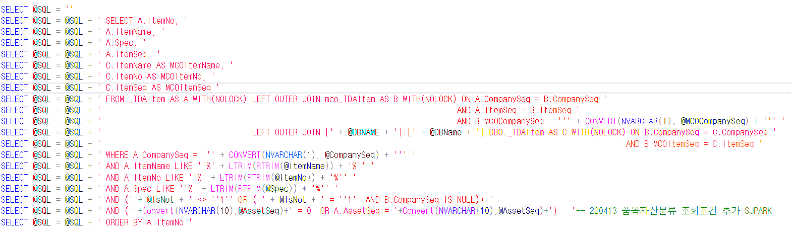

0409 (동적쿼리, 형변환)
품목별창고별실사차이조회_mcnk
다이나믹 컬럼 (실사수량, 차이수량)
화면 사전에는 기입이 되어있음
사전 업데이트 확인
월자재투입수량조정_mcnk
선택행 조정내역조회
재고실사분석_mcnk
창고별 수불집계조회 참조 : 수출INVOICE
다이나믹 (입고구분, 출고구분)
생산계획대비자재과부족조회_mcnk
다이나믹(투입예정, 입고예정, 과부족)
투입예정 신규추가
MCO품목Mapping_mcnk
주차별RTF입력_mcnk
신규
RTF번호
RTF년도
sp 수정 (다이나믹시트 월~일)
주차별출하계획입력_mcnk
출하계획번호
RTF Data
- NVARCHAR => INT형 변환
Convert(NVARCHAR(10),@AssetSeq)
(mcnk_SWMCOItemMappingQuery)
